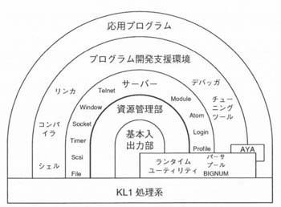
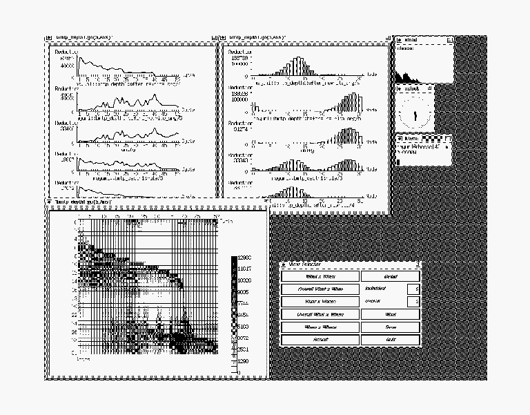

並列推論マシンのハードウェアを効率的に管理し、並列プログラムの開発に適 したソフトウェア開発環境を提供するオペレーティング・システム。どのモデ ルの PIM でも同一仕様の PIMOS が動作し、同一のプログラム・インタフェー ス、同一のソフトウェア開発／実行環境を提供する。
並列処理システム用のオペレーティング・システムは既に数多く開発されてい るが、大部分のシステムは逐次型計算機用のシステムを若干手直ししたもので あり、プロセサ数十台程度までの小規模システム用か、画一的な処理に向いた SIMD方式や数値計算などの特殊用途システムでしかなかった。この点PIMOSは, 超高並列システムまでを見通した汎用並列処理システムとして世界で初めて本 格的に実装され、実際の研究に役立てられるシステムとなっている。また同時 に、世界初の論理型言語による本格的並列オペレーティング・システムである。

PIMOS の全体構成

PIMOS のプロファイラの表示例
高並列システムにおいては、オペレーティング・システムのわずかなオーバヘッ ドでも、それが1台のプロセサに集中すれば、システム全体のボトルネックに なってしまう。PIMOSは、基本的な資源・実行管理部において徹底した分散管 理方針を取ることによって、応用プログラムの実行だけでなく、管理自体も分 散処理するようにして、このようなボトルネックが生じるのを防いでいる。
PIMOSは、KL1による並列ソフトウェアの開発に向いたさまざまな機能を提供し、 快適なソフトウェア開発環境を提供している。たとえばPIMOSデバッガでは、 KL1言語処理系の機能を利用した自動的なデッドロックの検出や、任意のプロ グラム部分の実行の一時停止・再開、別ウインドウを用いてのプロセス別のト レースや次第に生成されて行くデータの監視などができる。プロファイラでは、 プログラム実行中あるいは実行後に、どのような計算がいつ、どこで (どのプ ロセサで) 行なわれているのかをグラフィックに表示し、負荷分散状況の容易 な把握を可能にしている。これらの機能を利用することによって、知識プログ ラミング・システム群や機能実証ソフトウェア群の研究開発は大幅に加速され た。